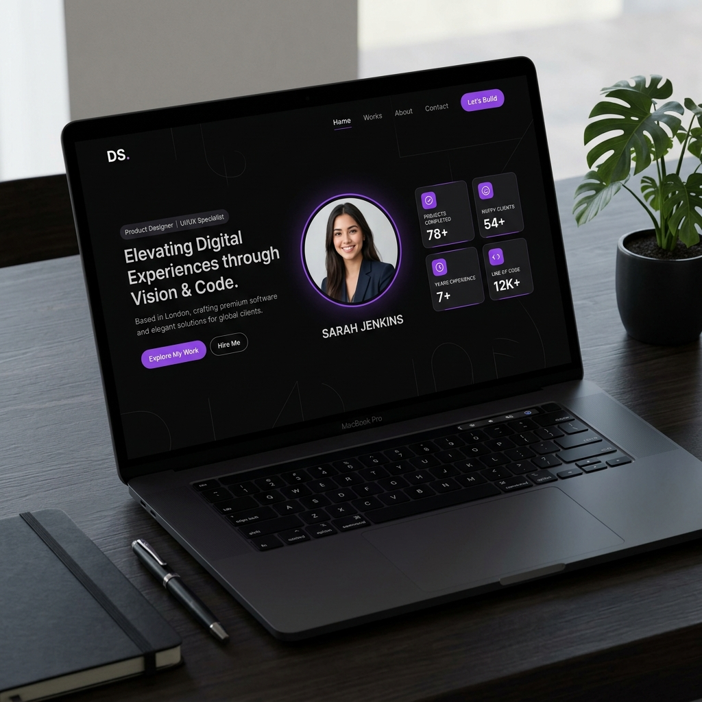
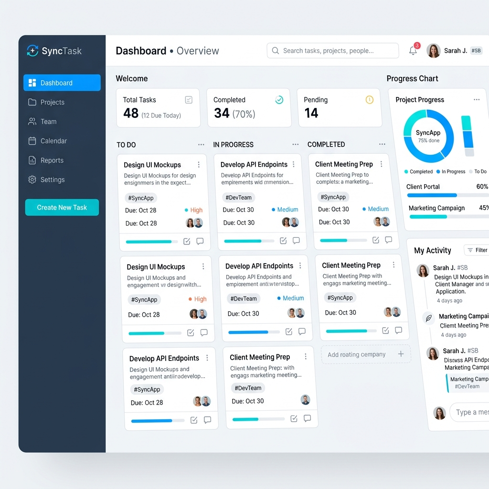
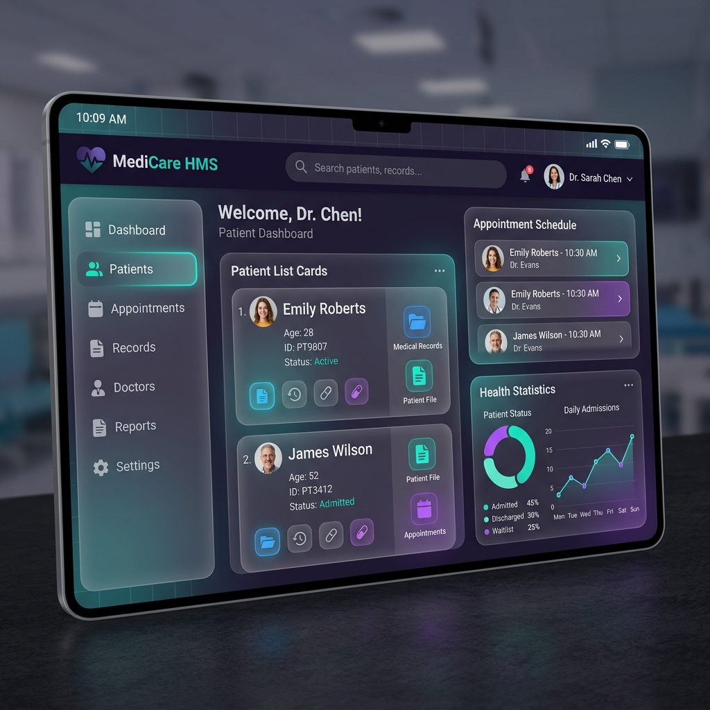

Kumpulan proyek yang telah saya bangun selama belajar dan bereksperimen dengan berbagai teknologi.

Banyak orang kesulitan mencatat keuangan harian dan membuat notes secara terorganisir. FlowNotes hadir sebagai solusi — aplikasi mobile modern yang dibangun dengan Flutter, menggabungkan pencatat keuangan dan notes dengan animasi halus, mode gelap, dan navigasi multi-halaman yang intuitif.

Pengelolaan data klinik yang manual rentan terhadap kesalahan dan lambat. Aplikasi Klinik berbasis Flutter ini hadir untuk mempercepat alur kerja — mulai dari pencatatan pasien, riwayat kunjungan, hingga antarmuka yang bersih dan responsif yang mudah digunakan staf medis.

Rumah sakit membutuhkan sistem yang terintegrasi untuk mengelola ratusan pasien setiap harinya. SIMRS ini dibangun dengan Flutter dan didukung Odoo sebagai backend — mengintegrasikan pengelolaan data pasien, rekam medis elektronik, jadwal rawat inap, dan layanan kesehatan dalam satu platform yang efisien.